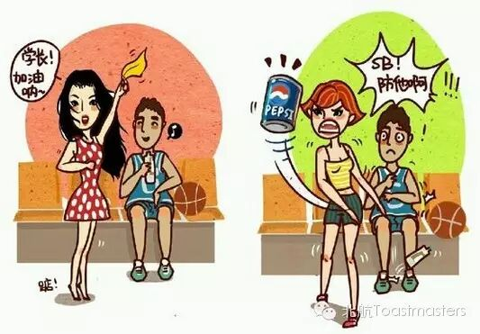
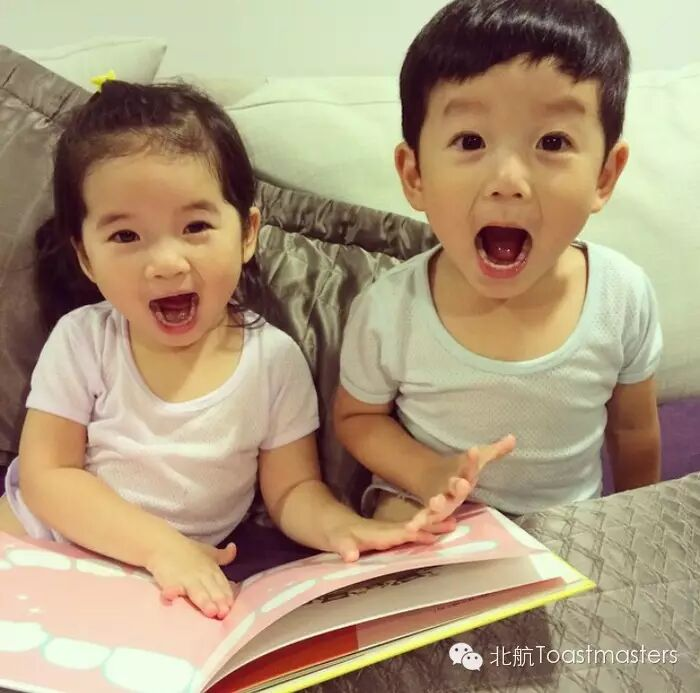

Time: 19:30-21:30,Friday,June.5
Venue: Room B208,New Main Building,Beihang University

Wo-man
Table Topic Master: Dale
What are differences between woman and wo-man? You may have already got answer from the picture above. Wo-men actually do exist in the world, and they are competent to do what man can do. It is hard for a girl to admit that she is as wild as a man. Manly women also have their another side that is little known by others. Do we really understand manly women? Are you a wo-man? Do you have a wo-man girlfriend? Hope you can come and share your experience with us.
Are you wasting your time watching movies? Of course not. Movies are helpful to learn foreign language, and also give life lessons. But if you don't have a clear idea of the true benefits of watching movies, CC1 speech of Summers may inspire you a lot. Let's follow his pace and see how to learn from watching.

Stories in childhood left us much sweet memories, and there must be someone and something unforgettable. This speaker is a special girl and has never been one without stories. What kind of story that Vicky will bring to us this time? Please come here with your ears and heart prepared.
All human beings are born free and equal in dignity and rights. Yet, many women still struggle daily to have their most basic rights protected. They wish to live in a world where they are not disadvantaged in the workplace because of their gender and where violence has no place. Our Doris become a feminist, and she will declare for themselves.

 点击最上方beihangtmc可订阅哦！
点击最上方beihangtmc可订阅哦！https://mp.weixin.qq.com/s/cbIxK4jotX-O10_-x7ToZg
本页为抢救式本地归档，图文已永久保存。